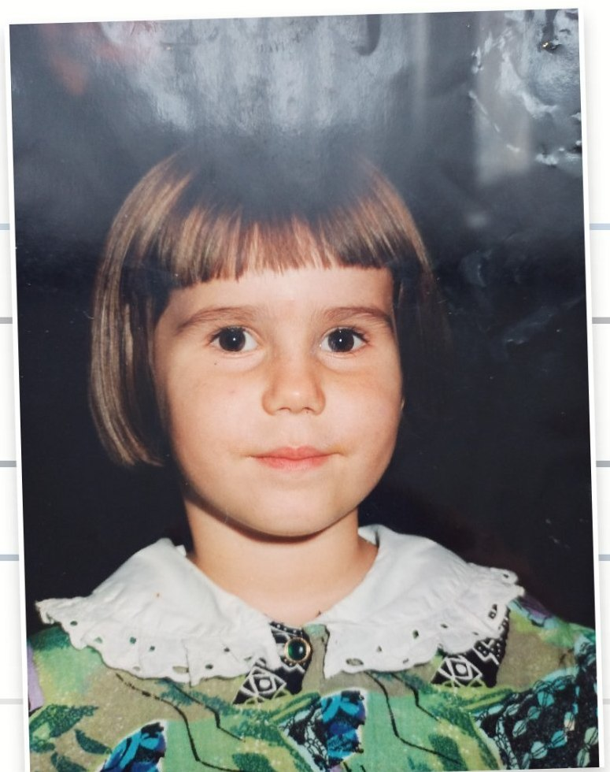
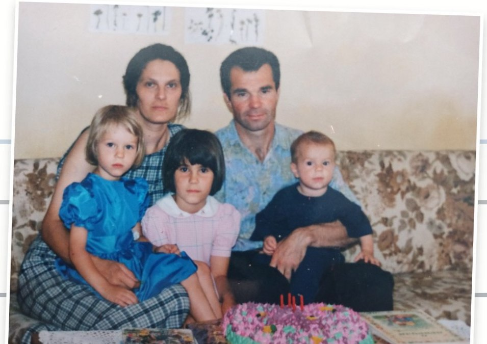
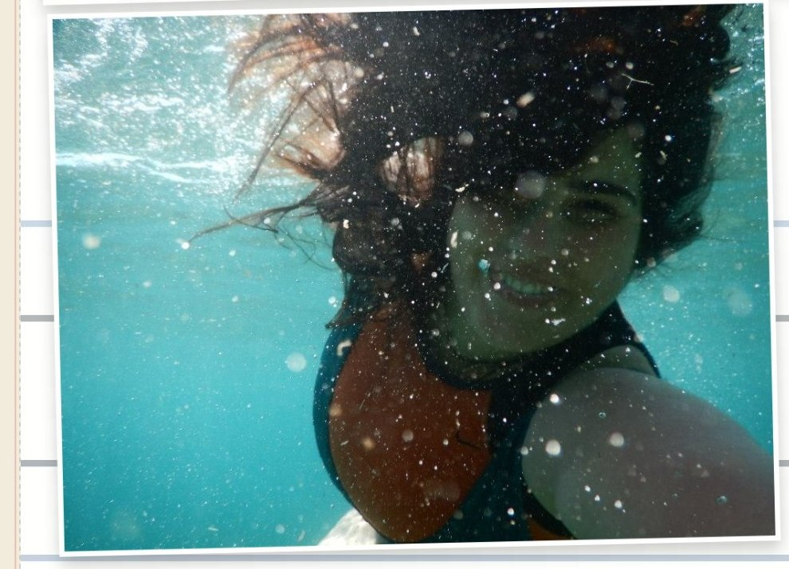
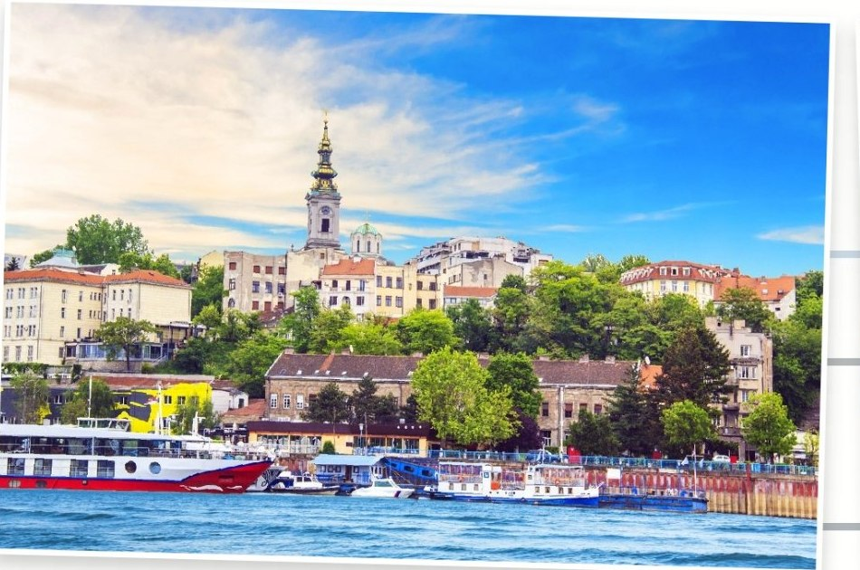
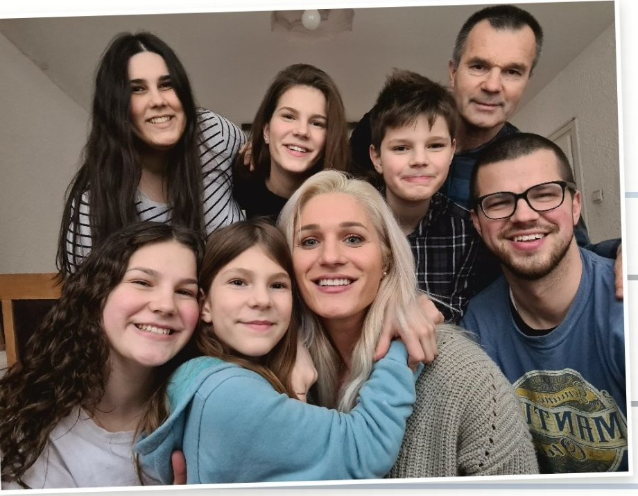

Ch. 01
Serbia · A Family of Seven
I am from Serbia, a small country in Europe. I am the oldest of 7 children! Growing up in a big family taught me a lot about team work, patience and the importance of communication.




